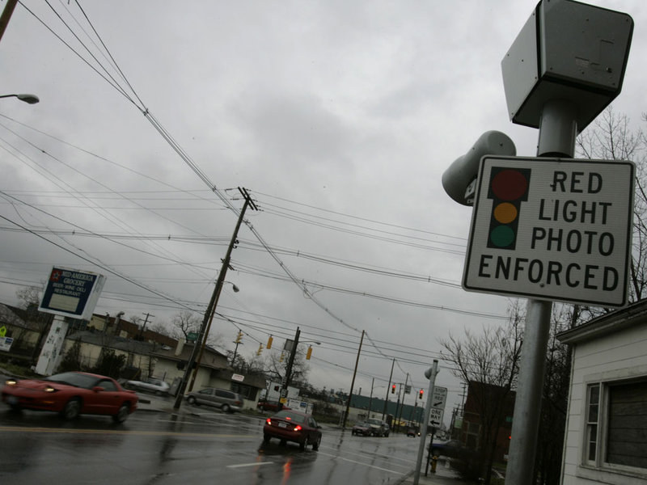

Red Light Cameras are Local Money Makers without Legal Penalty
by Red Light Cameras are Local Money Makers without Legal Penalty
Last Updated - 5 Days Ago

I Dropped to the Trap, a Red Light Camera
OK! You Got Me!
Haul away me into Hell's Dungeons!
Give me into the cold, dank stone walls and allow my feet are eaten by the rats as I sleep in distress within my manners!
I dropped for the trending trick employed by authorities to earn money from an public.
Out a traffic Legislation broke. Shame on Me!
No, I didn't rob a bank, though they have cameras.
I didn't anybody. And have cameras, just in case I did a few dastardly deed!
I grabbed the white line, shame on me!
Yep! This;s exactly what I did that was prohibited; I grabbed the line.
I really did it, I admit it and I'm not ashamed!
I didn't run undermining individuals or other vehicles.
Nope! I crossed the line.
You see, it had been in a RED LIGHT MONEY TRAP!
A snare designed to earn money, not simply enhance driver safety.
The Intersection is a Cash Maker.
Allow me to clarify.
I reside in Florida, and is a Outlet Mall nearby, on the side of Interstate-75, directly in Ellington.
When you depart I-75, you get to the Mall from Highway-301 to the entrance. This is a highway with a grass median.
Highway-301 is 3-lanes every way at the street and this junction is dual-lane.
Being a section of road, when you get into the junction, heading west, you will find two left turn lanes.
As with intersections, you receive a green arrow if traffic is open but it's legal to turn the green|As with intersections, you receive a green arrow but it's legal to turn the green that is, if traffic is open|As with intersections, you receive a green arrow if traffic is open, but it's legal to turn the green.
That is, in actuality I'd say.
What really occurred.
As I said, the law broke.The arrow moved outside, while I had been at the left lane along with the green lights came on.
I had been about three cars the front of this left-turn lane and I saw as every car pulled forwards (round the white line) and if there had been an opening at the oncoming traffic, they'd drive round the lanes and then go into the Restaurant entrance street.
So, as I arrived at the front of the lineup, I pulled forwards (round the white line) to turn abandoned.
And what happened?
and Yellow Red turned before I could turn upon the street.
Assessing my mirror, at which I was sitting , so that I couldn't back up
This left me sitting at the crossing, so that I waited before the traffic had ceased and that I crossed over to the Mall. No threat to anybody!
The Celtics came over a month afterwards.
I went into the Mall and life moved on. That is, until about a month and a half later after I received a letter.I opened it and inside was a charge for $158.00. The files went on to describe my faith, just how much I needed to cover, and inside what time-frame, and which have been. .
I asked about and the consensus was, so I needed to cover the invoice.
The ticket revealed two pictures of my car or truck. One one and a closeup of the back license plate was of my car.
There was not any uncertainty about it., it had been my car, and they state, at that minute, my car was breaking the law.
However thre law? Or was I a casualty of the most recent scheme for town authorities throughout the nation.
You see, I have been driving and in the vast majority of the countries, being a RV shop that is travel that I think about it.
Is it illegal to conduct a Red Light? It is.
However, can it be prohibited to get trapped with a Red Light at the crossing an intersection?
WellI had been advised that, technicallyI wasn't supposed to cross this line that was the lane, therefore I'd violated the law.
I replied that drivers and I did exactly what I'd done and hauled throughout the median if the light went into some green out of a green arrow.
To agreed it had been authorized to do so, however it had been not lawful to sit down at the crossing when the traffic was receptive, I must have remained behind the line and subsequently turned.
I walked away believing and laughing to myself;
Yeah, OK, and supposed to push the speed limit like that I do, however, since they understand that nobody will do anything about their infractions Cops dismiss such traffic legislation that are mundane.
I compensated the Nice to support my Regional authorities
In accordance with a real court case in Gardenia, California, the Police Chief said after the cities Red Light Cameras were set up, that there was no decline in collisions. As mentioned in the internet site; HighwayRobbery.
Having heard this statistic quoted by law enforcement classes on TV,I wasn't surprised.
I went, although angry and the fine was paid by me as I guess can perform.
It said right about the ticket which it had been a nice which didn't go from the driving record, in the event that you paid it.
In the event that it was contested by you |you dropped contested it, it was a genuine traffic crime that is reprorable.
I accepted this because I understood; when I had the money to throw off, I could push those Red Lights using their camera programs, at will.
When I did so in reality will give me a sort of plaque.
You see, I'd be encouraging my government.
Not for Security but for Cash
The longer I thought about it, the more insane I obtained. I saw that for a couple of minutes in the visitors, parked and moved back.A folks were, heading to the Restaurant who did the same thing I had done attempt to get in the Mall.
Not race during the light endangering others hoping to turn getting captured by way of a whilst at the median.
1 thing which I discovered was that the vast majority of the automobiles were out of out-of-state. Most likely they have been vacationers needing to search for a bargain, as is the case
I began my car and chuckled, realizing that a great deal of these folks went to find a surprise in the mail. A surprise like mine.
They'll get their very own invoice for $158.00 in Manatee County, a Bill for determining to holiday and store within this lovely Florida county.
The quickest spreading money-maker for cities and towns.
Based on FOX NEWS these cameras have the majority of the public seeing red over the misuse of the law to get cash by too frequently setting them to possess rapid Yellow Lights.
Actually the Manatee County figures according to a report by one exhibition series on a TV News, the county has Yellow times which are getting shorter. In reality some counties are utilizing briefer"Yellow light ON occasions" to snare more people and raise their fines.
The country has taken so much warmth in fact analyzing adding 0.4 minutes to a RLC yellow light times.
I began to think about this phenomenon, of earning money, the Red Light Camera method.
Imagine the money which these municipalities rake a minimum investment.
Consider the cameras.
Not Cameras to enhance security, though they're currently using laws that are real they turn for their own profit.
Thousands and thousands of cameras sitting there on those chilly poles. Indiscriminately.
And if the man (Cop?) Assessing the images in their personal computer sees a photo of an auto which has been immediately from place, he clicks on the"Bill that the Fool" button and life continues.
My criticism is that when there was a Cop sitting and watched me crossing online and being trapped at the crossing, he'd just shrug and dismiss my infractions like being not worthy of his period, and a chance occurrence.
Hell, he'd likely even believe; That occurs to me, occasionally.
Computers with cameras have no compunction to exercise empathy.
On the image is clicked by them, and they email the Bill, if advised.
I will envision the towns salivating over the opportunity to add more and more of those cameras. You see is so rewarding that they won't be able to prevent themselves.
Just picture! If there are put potential, we could wind up parking our cars and driving to our own tasks, and going home at night.
And we could get a monthly invoice, for absurd infractions, while our cities build larger municipal buildings, cities with populations of just 20,000 or so could have SWAT Teams with glistening Tanks and bullet proof trucks, and each Cop receives a brand new patrol car each year.
Oh My!
However, the fantastic thing is; although we, the taxpayers, may need to really budget for our developing Red Light Camera infraction invoices, but it won't go contrary to our Driving record.... Yet!
A intersection also good to not make the most of
For this particular feast each month, I proceed Incidentally.
It was a month or two afterwards I left the Mall and that I had been at the turn lane. The cars in front of me were one-by-one, yanking and they had been turning to leave the feast when the visitors was receptive.
However, having been captured at this junction, I had been cautious this time.
I have been visiting this Mall for many decades, and also this lane was open to turns. However a sign was hanging across the glistening fresh prevent light that is right-turn. It said; NO RIGHT TURN ON RED.
I looked, and Yep, Once I'd stopped! A camera was sitting there waiting to take my photograph. I understood that a motorist pick up another man and might find a ticket. The City tried to double-dip the shoppers.
Me? I waited together with the natives behind me blowing their horns, to the light shift.
I smiled and believing;
NOT TODAY, BIG BROTHER! NOT TODAY!
Should You Purchase a Red Light Ticket?
How to Prevent Red Light Camera Tickets
Leave a Comment:
Search
Advertisement